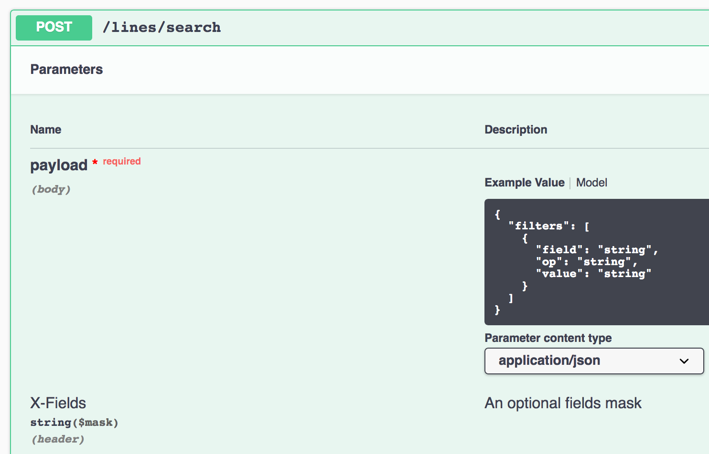

Tutorial¶
This will eventually be a tutorial for using Flask-Filter. Woot!
Example 1: The FlaskFilter Extension¶
The simplest and most effective way to use this library is through the
FlaskFilter extension. Instantiate this object as a singleton and
register it with the Flask application object, and you can query
resources with the search method from any view.
from flask import Flask
# Pet Model defined as subclass of `db.Model`
from pet_store import Pet, PetSchema
# SQLAlchemy and FlaskFilter objects created as singletons
from pet_store.extensions import db, filtr
app = Flask(__name__)
db.init_app(app)
filtr.init_app(app)
@app.route('/api/v1/pets/search', methods=['POST']
def pet_search():
pets = filtr.search(Pet, request.json.get("filters"), PetSchema)
return jsonify(pet_schema.dump(pets)), 200
Example 2: Preregistering your Models¶
You can also pre-register your models and schemas with the FlaskFilter
object, after which you will not need to pass the schema directly to the
search() method. This feature could be helpful if you are attempting to
auto-generate CRUD endpoints.
# Register in the app factory
filtr.register_model(Dog, DogSchema)
# in some endpoint down the line, you can now search like this:
filters = filter_schema.load(request.json.get("filters"))
pets = filtr.search(Pet, filters)
Example 3: Automatic Code Generation¶
If you are using Flask-Restplus to build resource-driven APIs, Flask-Filter
allows you to automatically generate search endpoints and register them
with your Swagger documentation:
Note
Note: this example is built with Flask-RestX and Flask-Accepts to pair Marshmallow directly with Flask-Restplus and avoid the duplication of serializers common with Flask-Restplus.
Use a simple search-endpoint factory function like this one to easily create search endpoints for all of your resources. Pair this with some other factory functions for a full auto-CRUD tool.
def generate_search(api, namespace, Schema, Model, filtr,
name: str = None) -> type(Resource):
""" factory function for creating a Resource search Manager in
Flask-Restplus API application. Pass me an `api` object and a
Restplus resource namespace along with a Marshmallow Schema and
a SQLAlchemy model, and I will generate / register your search
endpoint.
"""
res_name = name or Schema.__name__.replace("Schema", "")
schema = Schema()
@namespace.route("/search")
class ResourceSearch(Resource):
@namespace.doc(f"execute a resource search for {res_name}")
@accepts(schema=SearchSchema, api=api)
@responds(
schema=Schema(many=True),
status_code=200,
api=api
)
def post(self):
filters = namespace.payload.get("filters")
return filtr.search(
DbModel=Model,
filters=filters,
ModelSchema=schema
)
return ResourceSearch
# Now generate some search endpoints with this factory function
generate_search(api, ns_dogs, DogSchema, Dog, filtr)
generate_search(api, ns_toys, ToySchema, Toy, filtr)
generate_search(api, ns_usr, UserSchema, User, filtr)
The generate_search function shown above will register endpoints and document them in the swagger spec. If you click on the “search” endpoint in that image, you get the detailed documentation of your post request body.
Example 4: Extending FlaskFilter – Adding a new Filter¶
There may come a situation where the default filters provided by
this library do not meet the needs of your application. In this
event, you can extend the filter set provided by the FlaskFilter
library and create your own filters that can be added to a search
endpoint.
The default filters provided in version 0.1 of this library are as follows:
- LTFilter
- LTEFilter
- EqualsFilter
- GTFilter
- GTEFilter
- InFilter
- NotEqualsFilter
- LikeFilter
- ContainsFilter
These should cover most situations, but let’s imaging a business
need for a search endpoint that allows users to query with a
NotInFilter to complement the InFilter.
from flask_filter.filters.filters import Filter
from flask_filter.filters import FILTERS
class NotInFilter(Filter):
""" Custom not-in filter extending FlaskFilter search """
OP = "!in"
def __init__(self, field: str, value: Any):
if isinstance(value, str):
value = [value]
super().__init__(field, value)
def apply(self, query, class_, schema=None):
field = self._get_db_field(schema)
return query.filter(
getattr(class_, field).notin_(list(self.value))
)
def is_valid(self):
try:
_ = (e for e in self.value)
except TypeError:
raise ValidationError(f"{self} must be an iterable")
FILTERS.append(NotInFilter)
This implementation works fine, but let’s look at the similarities between what we just wrote and the existing InFilter – maybe we would be better off extending the InFilter to create a more easily maintained class:
class InFilter(Filter):
OP = "in"
def __init__(self, field: str, value: Any):
if isinstance(value, str):
value = [value]
super().__init__(field, value)
def apply(self, query, class_, schema=None):
field = self._get_db_field(schema)
return query.filter(
getattr(class_, field).in_(list(self.value))
)
def is_valid(self):
try:
_ = (e for e in self.value)
except TypeError:
raise ValidationError(f"{self} must be an iterable")
Whoops! There’s only a few tiny changes that had to be made to the existing InFilter. Looking closely the only things that differ are:
- the class name itself
- the
OPclass variable - the filter used in the apply method
This extension could be accomplished much more effectively by
sub-classing the InFilter class.
class NotInFilter(InFilter):
OP = "!in"
def apply(self, query, class_, schema=None):
field = self._get_db_field(schema)
return query.filter(
getattr(class_, field).notin_(list(self.value))
)
FILTERS.append(NotInFilter)